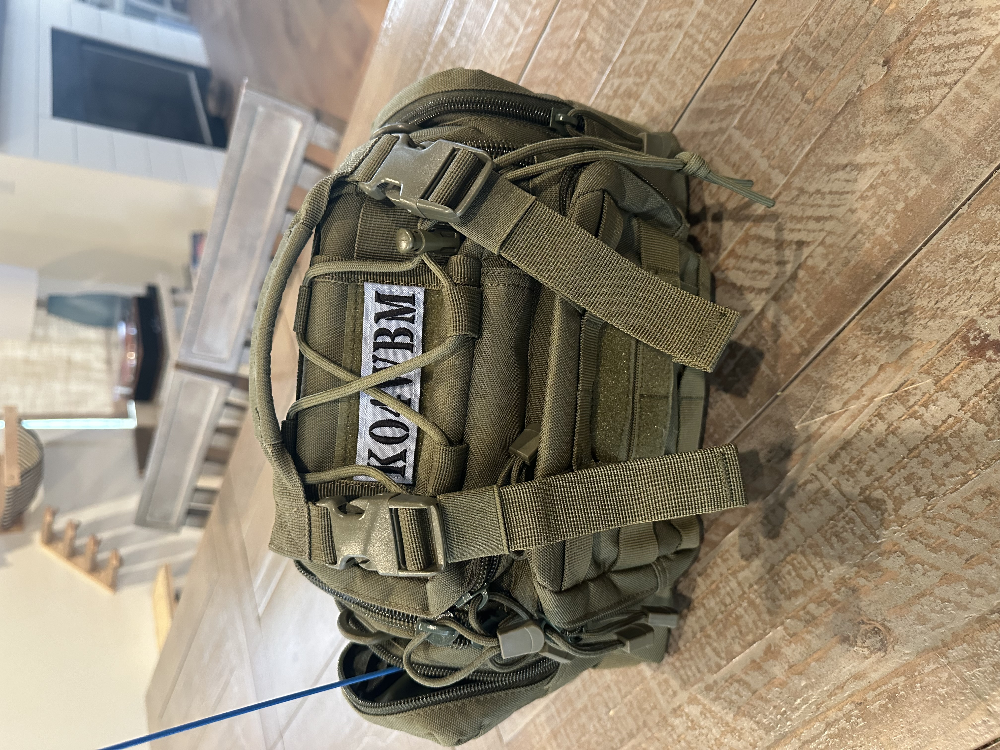
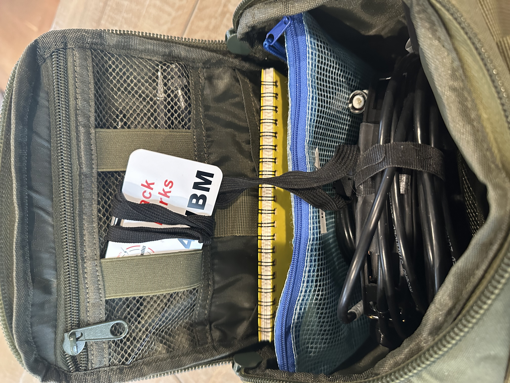

Overview
This guide presents a portable radio emergency kit designed for daily carry by amateur radio operators. The setup features a compact tackle box sling bag containing essential communication equipment and accessories.
Bag Options

Several bag types are suitable for an everyday radio kit:
- Large admin pouches
- Pistol range bags
- Sling bags
- Map sling bags
- Tackle box bags
The selected bag should provide adequate space for core equipment while allowing room for backup items if needed.
Core Components
Antennas

- Signal Stick Antenna – 19" BNC antenna - great performer
- Diamond RH519 – Small flexible BNC antenna
- BNC magnetic mount – Mag Mount for BNC/Signal Sticks
- N9TAX rollup J-pole – Compact portable antenna
Accessories

- Weather-resistant notebook (Rite in the Rain brand)
- Writing instruments
- Identification badge
- Soft pencil bag for organization
Within the Accessory Pouch

- Spare battery - must have!
- Bluetooth microphone
- Hand microphone with earbud or headset
- USB cable for programming/charging
- USB charging brick
Key Design Philosophy
The kit emphasizes portability and redundancy, with separate storage compartments allowing easy addition of backup radios without overcrowding the primary bag.
The kit emphasizes portability and redundancy, with separate storage compartments allowing easy addition of backup radios without overcrowding the primary bag.